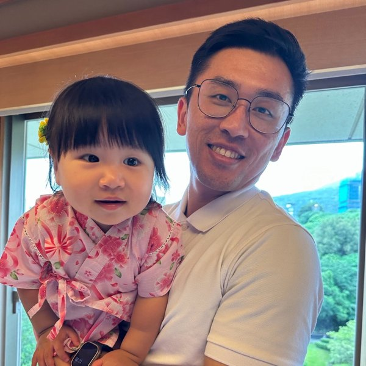

開場破冰：台灣金曲猜歌
先玩 10 分鐘。這不是題外話：這整個遊戲網頁就是用今天要教的 AI 工具「交辦」出來的，沒有寫過一行程式。三小時後，你也做得出自己的版本。
台灣金曲猜歌
從 50 年代唱到 2026，15 組歌單共 300 首：國語年代金曲、台語金曲四個時期、鄧麗君與鳳飛飛特輯。選一組，播前奏，全場搶答。懷舊團體、病房團康、日間病房的開場都用得上。
投影在大螢幕上效果最好；沒網路的活動室可用「本機音樂」改放自己的檔案。
今天怎麼玩（10 分鐘）
- 講師投影，選一組歌單。同仁年齡層混合，先選「90 年代」或「經典精選」，再換一組台語。
- 按「播前奏」，預設只放前 15 秒，大家直接喊歌名。
- 沒人猜到就按「提示①」，一次一點。
- 「公布答案」後一起哼一段，再「下一題」。玩 5～6 題就夠熱了。
帶病人團體時
- 慢性病房與日間病房的中高齡個案用「台語 1950–1970」或「鄧麗君特輯」，猜歌本身就是懷舊與現實導向的素材。
- 兩桌對抗、答對加分；分數不重要，開口、抬頭、看彼此才重要。
- 注意力短的個案把「提示」當成固定節奏：播 15 秒 → 提示 → 公布，不要拖。
這跟今天的課有什麼關係
版面、歌單、計分、提示流程，全部是用 AI 一句一句講出來的。今天最後兩節會教「寫程式」和「上傳 GitHub」，這種可以直接給病人玩的網頁教案，就是我們要帶走的成品。


講師介紹
為什麼是職能治療師來教 AI：因為這幾百個教案，都是在帶團體、看個案的空檔用 AI 做出來的。

鍾孟修 職能治療師
愛迪樂有限公司 執行長｜愛迪樂居家職能治療所 所長
- 社團法人台灣生活復能健康促進協會 副理事長、中華高齡專業照護訓練協會 理事
- 《讓你健康不失智》作者（商周出版，2025）；Homeseen 失智症桌遊 共同創辦人
- 社區大學講師；ICOPE 評估員、照顧者與長照專業人員培訓講師
- 2026 高照之心表揚大會「老師真會獎」講者：AI 輔助於照顧、復能與異常事件資料庫之應用
過去一年半，用 AI 在 GitHub 上做了數百個公開的教案與工具網頁：紙本生成器、步驟動畫、團體遊戲、藝術活動、影片與教案資料庫。今天挑 65 個放在教案實例庫，每一個都可以直接拿去帶團體，也都是今天教的方法做出來的。
今天的流程（13:30–16:30）
前半段把工具與提示語練熟，後半段做出東西、放上網。全程請開著自己的筆電或手機跟著做。
| 時間 | 單元 | 你會做到 |
|---|---|---|
| 13:30–13:45 | 破冰、講師介紹、今天帶走什麼 | 玩一輪金曲猜歌，掃 QR 打開講義 |
| 13:45–14:15 | 界線與守則、Typeless 語音、Chrome 裡的 Gemini | 裝好語音輸入，用說的下第一個指令；用側邊欄 3 分鐘查完一篇資料 |
| 14:15–14:45 | 六要素＋帶入病人條件 | 寫出一份團體教案提示語，讓 AI 當督導挑出做不到、不安全的地方 |
| 14:45–15:15 | 生圖教案、AI 生簡報、Canva 魔法圖層 | 生出一組圖卡並局部修改；搞清楚 Gemini 該用「任務」還是「對話」 |
| 15:15–15:25 | 休息 | |
| 15:25–16:05 | 寫程式：網頁遊戲、紙本生成器、資料庫、HTML 簡報、Gemini 分享、OpenCode | 請 AI 做出一個可以玩的網頁教案，拿到一個可以分享的網址 |
| 16:05–16:25 | 上傳 GitHub | 註冊、上傳、用手機打開自己的教案網頁 |
| 16:25–16:30 | 課後任務、粉專領教案 | 追蹤粉專，之後的新教案直接領 |
要先準備的帳號
個人 Google 帳號（Gemini、Chrome）、ChatGPT 免費帳號、Claude 免費帳號。三個都免費，用個人信箱註冊即可；院內公務帳號可能被管理者關閉 AI 功能。
要先裝的軟體
Typeless（電腦與手機）、OpenCode 桌面版（選裝，見OpenCode）。公務電腦不能裝軟體的同仁，用手機或自備筆電。
要帶的題目
想一個你下週就要帶的團體：對象（病房／日間／社區復健）、人數、時間、想練什麼。今天所有練習都用你自己的題目做。
AI 能幫什麼、不能信什麼，以及精神科的資料界線
把 AI 當成「打草稿很快、但沒進過病房的實習生」。治療師才是最後簽名的人。
擅長交給 AI 打草稿的事
| 擅長的事 | 活動室可以這樣說 |
|---|---|
| 發想與變化 | 「給我 10 個適合 8 人團體、坐著就能做、20 分鐘內完成的手部精細動作活動。」 |
| 分級 | 「把這個摺紙活動分成三個難度，分別給注意力 5 分鐘、15 分鐘、30 分鐘的個案。」 |
| 改寫語氣與格式 | 「把這份活動流程改成給新進治療師看的帶領稿，每步驟一句話加一個提醒。」 |
| 生圖、做簡報、寫網頁 | 「做一組 8 張『情緒辨識』圖卡」「做一個可以在平板上玩的配對遊戲」。 |
| 整理與查核 | 「列出這份教案裡所有需要剪刀、牙籤等尖銳物的步驟。」 |
小心四個一定要人工把關的地方
- 幻覺：它會一本正經地編出不存在的量表、文獻與數據。要出處就要求附連結或 DOI，自己點開至少一篇。
- 不懂你的病人：它不知道這位個案有手抖、嗜睡、吞食風險或自傷史。這些條件要你在提示語裡寫進去（見帶入病人條件）。
- 安全盲點：AI 很愛建議剪刀、牙籤、繩子、小珠子。病房的物品管制規範只有你知道。
- 時效與地區：法規、補助、量表版本可能是舊的或國外的。以院內規範與最新公告為準。
不輸入可識別的病人資料
姓名、病歷號、身分證字號、床號、完整生日、照片、具體到可指認的病史組合，都不能貼進 AI。要討論個案，先去識別化：「50 多歲男性、思覺失調症、負性症狀為主、右手輕微震顫」就夠用了。
不上傳院內未公開文件
病房作業規範、評鑑資料、未公開的統計與公文，不放進免費的公開 AI 工具。已公開的衛教單張、政府網站資料可以用。
不直接採用未覆核的內容
AI 寫的活動流程、安全提醒、量表解讀，都要治療師核對後才用在病人身上。AI 不做診斷、不決定介入，只幫你把教案做出來。
帶同仁與實習生用 AI 做教案，先講清楚的四件事
隱私
上面的三不原則。團體照片、病人作品照片要放進 AI 或上網前，先確認同意書與院內規範。
查核
年份、數字、量表內容、藥物副作用的描述都要對回可信來源；不確定的請資深同仁確認。
著作權
圖片與音樂要合法：優先用自己拍的、AI 生成的或確認可商用的素材。老歌在活動室帶唱沒問題，公開上網要注意授權。
誠信
教案、報告註明哪些部分用了 AI、自己改了什麼。重點放在「判斷與調整」，那才是治療師的專業。
工具一：Typeless 語音輸入
在任何軟體裡按一下快捷鍵開始講話，再按一下就變成整理好的文字，會自動去掉「嗯、那個」並補上標點。
電腦和手機用同一個帳號登入，個人字典與設定會自動同步。請點選你的裝置：
Windows 安裝步驟
- 點上方「前往官網下載」，按 Download for Windows，下載安裝檔（.exe）。
- 到「下載」資料夾雙擊安裝檔，依畫面完成安裝。若跳出「Windows 已保護您的電腦」，確認來源是 Typeless 官網後，按「其他資訊 → 仍要執行」。
- 開啟 Typeless，用 Google、Apple 或 Email 登入。
- 允許使用麥克風。若沒有聲音：Windows「設定 → 隱私權與安全性 → 麥克風」，打開「讓桌面應用程式存取麥克風」。
- 點進任一文字框，按一下 右 Alt 試講一句，再按一下結束，確認文字有貼上。
- 到「設定」把語言改成繁體中文（台灣），否則可能輸出簡體字。
Windows 預設快捷鍵
「右 Alt」是空白鍵右邊那一顆（鍵盤上印 AltGr 的也可以）。
試試看：打開記事本或 Word，點進文件裡，按一下 右 Alt，說：「今天的團體是報紙球投籃，以下分三點。」說完再按一下 右 Alt，看看它怎麼整理。
Mac 安裝步驟
- 點上方「前往官網下載」，按 Download for macOS，下載 .dmg 檔。
- 打開 .dmg，把 Typeless 拖進「應用程式」資料夾。
- 開啟 Typeless（第一次開啟若出現提醒，按「打開」），用 Google、Apple 或 Email 登入。
- 授權麥克風與輔助使用（讓文字能貼進任何輸入框）。若沒跳出視窗，到「系統設定 → 隱私權與安全性」手動開啟。
- 到「設定」把語言改成繁體中文（台灣）。
Mac 預設快捷鍵
如果按 Fn 會切換輸入法：到「系統設定 → 鍵盤」把 Fn 的功能改掉，或在 Typeless 換一組快捷鍵。
試試看：打開備忘錄，點進文字框，按一下 Fn 說一段話，再按一下 Fn 結束。
iPhone 安裝步驟
- App Store 搜尋「Typeless」下載（或點上方按鈕，用手機開啟官網下載）。
- 開啟 App，用和電腦同一個帳號登入。
- 到 iPhone「設定 → App → Typeless → 鍵盤」，打開 Typeless 和 允許完整取用（語音要送到雲端整理，所以需要這個權限）。
- 允許使用麥克風，在 App 裡把語言設為繁體中文（台灣）。
iPhone 使用方式
- 打開 LINE、備忘錄或任何可以打字的地方。
- 長按鍵盤左下角的 🌐 地球鍵，切換到 Typeless 鍵盤。
- 點 Speak 開始說話，說完再點一次，整理好的文字就會出現（三個按鈕的用法見下方「手機三個按鈕」）。
- 要換回注音，同樣長按地球鍵切換。
Android 安裝步驟
- Google Play 搜尋「Typeless」下載安裝。
- 開啟 App，用和電腦同一個帳號登入。
- 依 App 引導啟用 Typeless 鍵盤（通常在「設定 → 系統 → 語言與輸入 → 螢幕鍵盤」；各品牌手機位置略有不同）。
- 允許使用麥克風，在 App 裡把語言設為繁體中文（台灣）。
Android 使用方式
- 打開 LINE、Gmail 或任何可以打字的地方。
- 點鍵盤右下角的鍵盤圖示（或下拉通知列的「選擇輸入法」），切換到 Typeless。
- 點 Speak 開始說話，說完再點一次，文字就會出現（三個按鈕的用法見下方「手機三個按鈕」）。
電腦快捷鍵：三個功能、三組按鍵｜按一下開始，再按一下結束
| 功能 | Mac 預設 | Windows 預設 | 怎麼用 |
|---|---|---|---|
| 聽寫 Dictate | Fn | 右 Alt | 點進文字框 → 按一下 → 說話（畫面出現 Voice bar）→ 再按一下，整理好的文字直接貼上 |
| 翻譯 Translate | Fn + 左 Shift | 右 Alt + 右 Shift | 按一下 → 在 Voice bar 選目標語言 → 用中文說 → 按主快捷鍵（Fn／右 Alt）結束，譯文直接貼上 |
| 問任何事 Ask anything | Fn + 空白鍵 | 右 Alt + 空白鍵 | 先選取文字 → 按一下 → 說「改得客氣一點」「縮成三句」→ 按主快捷鍵結束，選取的文字直接被替換；沒選文字就是直接提問，答案出現在小卡片 |
手機上怎麼用？三個活動室現場情境
切換 Typeless 鍵盤，說：「回覆家屬，下週三下午兩點的家屬座談會，請帶個案平常喜歡的音樂清單，語氣親切。」
走回護理站的路上，打開備忘錄口述剛剛的團體流程與個案反應（用代號，不說姓名），回座再貼進紀錄。
在 Typeless 裡用翻譯功能，說中文直接輸出越南文或印尼文，傳給外籍照顧者，重要內容仍以正式書面說明為準。
手機三個按鈕學會就夠：Speak、左下角的筆、翻譯
Speak：口述輸入
- 點進輸入框 → 點 Speak 一下 → 說話 → 再點一下
- 贅詞、重複、說錯又改口的，都會自動清乾淨
- 說「第一點、第二點」會自動排成清單
- 鍵盤收起來也能繼續聽（背景聽寫）
左下角的筆：Speak to edit
- 先選取要改的文字（手打的、口述的、貼上的都行）
- 點左下角的筆 → 說你要怎麼改 → 再點一下
- 例：「改得親切一點」「縮成兩句」「改成條列」「改成個案聽得懂的說法」
- 沒選文字時，可直接說「幫我寫一段回診提醒」（Help me write）
翻譯：長按 Speak 往上滑
- 長按 Speak → 往上滑 → 選目標語言
- 用中文說 → 點 Speak 結束 → 輸入框直接出現譯文
- 要新增語言：App 的 Account → Settings → Translation targets → Add another language，拖曳可排順序
- 用法：回外籍照顧者 LINE、提醒回診時間、交代活動要帶的東西
沒有 Typeless，用 ChatGPT 與 Gemini 的麥克風也能做到
ChatGPT：兩個麥克風，功能不同
- 輸入框旁的「聽寫」麥克風：把你說的話轉成文字放進輸入框，送出前可以修改（最接近 Typeless）
- 語音模式（Voice）：即時對話，適合邊聊邊釐清；結束後對話會留下文字紀錄
- 做法：先用聽寫說完 → 看文字 → 補一句「請整理成條列並去掉口語贅詞，保留原意」
Gemini：手機 App 與 Chrome 側邊欄
- Gemini App 輸入框的麥克風＝聽寫；Live＝即時對話
- Chrome 側邊欄的 Gemini 也能用麥克風，口述「幫我整理這一頁」
- Google 文件：工具 → 語音輸入，口述長文再貼給 AI
不裝任何軟體：Mac 與 Windows 本來就有聽寫
設定一次，之後按兩下就能講
- 開啟聽寫
系統設定 → 鍵盤 → 「聽寫」打開；語言選中文（繁體），可加英文 - 設定快速鍵
預設按兩下 Fn（🌐）；可改成按 Control 兩下，避免跟 Typeless、Gemini 的 fn 衝突 - 叫出與結束
點進文字框 → 按快速鍵 → 出現麥克風就說；說「逗號」「換行」會打出來；按 Esc 結束
一組快速鍵：Win + H
- 確認語言
右下角輸入法切到「中文（台灣）注音」，語音輸入跟著鍵盤語言 - 叫出與結束
點進文字框 → 按 Win + H → 出現麥克風就說；再按一次或說「停止聽寫」結束 - 設定
工具列齒輪開「自動標點」；設定 → 時間與語言 → 語音，可選麥克風、下載語音包
AI 會議記錄：三條路線，依會議型態選
科內會議、個案討論會、跨團隊會議都用得到。先看是線上、實體還是短會，再選路線。
A 平台內建筆記
- Google Meet「幫我做筆記」：目前不支援中文（只有英、法、德、義、日、韓、葡、西 8 種），中文會議請走 B 或 C
- Zoom AI Companion、Teams Copilot：會後摘要、可問「剛剛誰負責什麼」；兩者的摘要語言都含中文，請確認院方方案
- 優點：分講者、不漏段；缺點：要院方方案與管理員開啟
B 錄音 → 轉錄 → AI 整理
- ChatGPT Record 模式（Mac App，付費方案）：官方單次上限 4 小時，實測約 2 小時會自動結束；英文最準，中文要校對人名
- 手機錄音：iPhone 語音備忘錄、Pixel 錄音機 → 把文字貼給 AI
- Gemini 上傳音檔：免費 10 分鐘，AI Pro／Ultra 3 小時；NotebookLM 上傳錄音可問決議並附出處
C 會後口述決議
- 會議最後 3 分鐘，主持人口頭複述決議與待辦，大家當場確認
- 散會後用 Typeless／聽寫口述一次 → 貼給 AI 整理
- 優點：最快、最準（當場確認過）；適合交班、個案討論後的分工確認
- 開錄前告知並取得同意；涉及病人的個案討論，錄音與逐字稿都要先去識別化，敏感議題（人事、考核）另外處理
- AI 整理完一定要人核對數字、人名、期限，再發出
- 紀錄存在院方核可的空間，不留在個人帳號
講得好，AI 才整理得好
- 先想三句再開口：要寫給誰、重點是什麼、要什麼格式。
- 一口氣講完：不用怕講錯，講錯直接說「不對，改成…」，AI 會幫你修正。
- 口述格式：「以下分三點」「第一點…」，輸出就會自動條列。
- 先講再修：選取一段文字，按「問任何事」快捷鍵，說「改得更口語」「縮短成兩句」，原文會直接被替換。
設定「個人字典」
把科內常用、容易被聽錯的詞加入字典，辨識率會明顯提升：
職能治療現實導向感覺統合錐體外症狀日間病房社區復健中心團體動力工作訓練
Chrome 裡的 Gemini：做教案前，先把資料快速查完
台灣已開放。瀏覽網頁時打開右側邊欄，直接問「這一頁」的內容，還能一次比較多個分頁。
開啟方式
- 把 Chrome 更新到最新版（右上角「⋮ → 說明 → 關於 Google Chrome」）。
- 用個人 Google 帳號登入 Chrome（需年滿 18 歲）。
- 點瀏覽器右上角的 Gemini 圖示，右側會打開側邊欄。
- 沒看到圖示？在網址列輸入
chrome://settings/ai檢查 AI 功能是否開啟。
四個最實用的功能
- 摘要這一頁：打開一篇活動設計文章，問「用三句話說重點，材料與時間各是什麼」。
- 選取就問：反白一段艱深文字，選「詢問 Gemini」，請它白話解釋。
- 多分頁比較：在輸入框按 + 加入多個分頁，請它做成比較表。
- 串接 Google 服務：把團體時間排進日曆、草擬 Gmail，送出前都會先請你確認。
部分進階功能（例如自動代為操作網頁、Skills 指令庫）目前僅限特定地區、語言或付費方案。
試試看：用側邊欄讀一篇公開的活動設計文章
打開任何一篇公開的團體活動或懷舊治療文章（政府網站、學會、期刊摘要都可以），在側邊欄貼上：
提示語六要素：先把「怎麼問」練成固定格式
同一個要求，講清楚六件事，AI 的第一版就會接近可用。下一節再把病人的條件加進去。
例：精神科資深職能治療師
例：日間病房 8 位成人個案
例：設計 40 分鐘的手工藝團體
例：不能用剪刀、牙籤、繩子
例：流程表＋材料清單，一頁內
例：標出需治療師確認的地方
提示語組合器
選一個範例帶入，或自己填，按「組合」就能複製去 Gemini、ChatGPT 或 Claude 使用。
教案提示語：把病人的條件帶進去，再讓 AI 當督導挑錯
AI 設計的活動到了病房會「卡住」，多半不是創意不夠，而是設計時沒把病人的身體、認知與安全條件放進來。這一節是今天最重要的 30 分鐘。
第一步：用「帶入條件」的教案提示語，一次講清楚六件事
下面這份範本涵蓋精神科職能治療團體最常需要交代的條件。用 Typeless 照著「講」一遍，比打字快三倍。括號裡的內容換成你的團體。
個別治療版
把【對象】改成一位去識別化個案（年齡層、診斷、功能現況、動機），【目標】寫成可觀察的行為，例：「能在提示下完成 3 步驟的工作任務」。
兒童青少年版
加上發展階段、感覺調節特性與家長是否在場；材料限制改成「可洗、無小零件」；請 AI 同時給「給家長的一句話說明」。
社區復健中心版
加上「與就業／生活自理的連結」，請 AI 把活動延伸成一週的家庭作業，並附一張可列印的自我記錄表。
第二步：讓 AI 當督導，出發前先把做不到、不安全的地方挑出來
把 AI（或自己）寫好的教案貼回去，用下面這段請它換一個角色挑錯。這比你自己重看三遍更容易發現盲點。
- 材料含剪刀、牙籤、長繩、小珠子
- 規則超過 3 條，失智或負性症狀明顯的個案記不住
- 用兒歌、貼紙、拍手獎勵成人
- 40 分鐘排了 7 個步驟，實際只做得完 4 個
- 需要閱讀長文字的學習單
- 剪刀 → 預先裁好；牙籤 → 棉花棒；繩 → 寬布條或毛根
- 一個活動只練一兩件事，成功率要高，再談挑戰
- 題材用成人熟悉的工作、家務、老歌、節慶
- 每個步驟標「必做／可略過」，超時就略過
- 文字改成圖＋一句話，字級 20pt 以上
第三步：同一份教案，要求四種成品
教案確認後，不用重新解釋，接著說：
生圖類教案：建議用 ChatGPT 做、Gemini 當免費備援
情境圖卡、順序卡、找不同、著色圖、情緒辨識卡，這些「一組要長得一樣」的教案，重點不是會畫，而是畫完能指定位置小修、而且整組風格一致。
結論先講：兩個都能生圖，教案類建議以 ChatGPT 為主
| ChatGPT（建議主力） | Gemini（免費備援、文字圖卡） | Claude | |
|---|---|---|---|
| 怎麼開始 | 對話框「＋」→「製作圖像」，或直接說「請生成一張圖」 | 對話框「＋」→「建立圖像」（Nano Banana 模型），可選顯示比例與格式 | 不生照片式圖片 |
| 局部修改 | 點圖打開編輯器，用「留言」點在要改的位置打字，只改那一處 | 用文字說「只改標題底色」；講師實測有時整張都變、還出現錯字（見下方截圖） | — |
| 一組風格一致 | 在同一個對話接著說「第 2 張，同樣風格」，一致性好；可上傳參考圖 | 可以，但偶爾會換畫風，要多生幾次挑 | — |
| 圖裡的中文字 | 進步很多，但仍要逐字核對 | 中文字與資訊圖卡排版表現好 | 用 HTML／SVG 做文字 100% 正確的圖卡 |
| 免費額度 | 免費帳號每天有張數上限，用完要等或隔天 | 免費帳號可用，Google 沒有公布固定張數，額度會隨當天負載調整；大量用需付費方案 | 免費 |
| 適合 | 情境卡、順序卡、找不同、著色線稿、整套教案圖 | 單張衛教圖卡、有中文標題的海報初稿、額度用完時的備援 | 表格型、步驟型圖卡；寫好提示詞再貼到 ChatGPT／Gemini 生成 |
實際操作畫面：同一張圖卡，兩家各做一次局部修改
講師帳號實測（2026 年 11 月，衛教圖卡範例），點圖可放大。重點看「局部修改」後其他地方有沒有被動到。


五種常用的生圖教案，提示語直接複製
共同規則：圖中不要有文字（字另外用 Canva 或簡報加，才不會錯字）、指定「亞洲成人」、扁平插畫風、同一組同樣配色、先生第 1 張確認風格再生全套。
AI 生簡報：Gemini 用「任務」、ChatGPT 用「工作」，再用 Canva 修
同一個教案主題，用的「模式」不同，做出來的簡報差很多。先選對模式，再補圖，最後用 Canva 魔法圖層或 DeckEdit 微調。
先回答最常被問的問題：Gemini 到底要用「任務」還是「對話」？
用「對話」就好
- 問問題、要建議、討論教案方向
- 要一段文字：帶領稿、家屬說明、一封信
- 改寫、翻譯、摘要一小段內容
- 生成單張圖片（「建立圖像」）
特徵：一來一回、看完就好、不需要反覆修同一個東西。
要用「任務」（Canvas）
- 要做出一個成品：簡報、網頁遊戲、學習單生成器、文件
- 做完還要反覆改：「第 4 頁換圖」「按鈕大一點」
- 要預覽：網頁要能點、簡報要能翻
- 要匯出或分享：匯出成 Google 簡報、文件，或產生公開網址
特徵：多步驟、會停下來等你確認、成品留在右側面板裡持續修改。
Gemini不要在「對話」裡做，開「任務」再做
為什麼要用「任務」
- 對話模式一次只回一輪，做簡報常常只給大綱或做到一半就停。
- 任務會把「規劃 → 寫內容 → 排版 → 配圖」拆成多步驟自己跑完，做出來的版面精緻，會自動產生示意圖。
- 做好後右上角可「匯出成簡報」到 Google 雲端硬碟，用 Google 簡報繼續改。
操作步驟
- Gemini 對話框 → 工具 → 開啟任務（部分版本顯示為 Canvas）。
- 先把教案素材整理進 Gemini Notebook（NotebookLM）：上傳活動流程、科內既有教案 PDF、參考文章。
- 在任務裡輸入 @Gemini Notebook，選到那本筆記本，再說「根據這本筆記本做 10 頁帶團體用的簡報」。這樣內容只會來自你的資料，不會亂編。
- 看預覽，直接說「第 4 頁換成大家圍桌做手工藝的圖」「整體改成暖色」。
- 滿意後「匯出成簡報」。
Gemini Notebook 自己也能做簡報，但⋯
- NotebookLM 裡按「簡報」也能直接產出，速度快、內容忠於資料。
- 缺點是文字呈現有時不清楚：字太小、一頁塞太多、標題和內文分不開。
- 要改只能再下提示詞請 AI 重做，一來一回很花時間；要精修版面，不如回到任務模式，或匯出後用 Canva、DeckEdit 改（見下方）。
兩條路怎麼選
| 任務 + @Notebook | Notebook 直接做 | |
|---|---|---|
| 版面 | 精緻、會配圖 | 陽春、文字常擠 |
| 內容來源 | 筆記本資料 | 筆記本資料 |
| 修改 | 說一句就改 | 要重新下提示詞重做 |
| 適合 | 帶團體、科內研習、對外教材 | 快速看資料能做成什麼 |
ChatGPT用「工作」模式，不要用一般對話；要圖就用生圖
為什麼要用「工作」（Projects／Tasks）
- 一般對話做簡報，流程長一點就容易中途斷掉，或只給你文字版。
- 工作模式跑的流程比較長，可以多步驟進行：先大綱、再逐頁、再生圖、最後打包成 PPTX，中間比較不會中斷。
- 專案裡的指示會一直記得（對象、色系、字級），下次做同系列簡報不用重講。
操作步驟
- 側欄「工作」→ 新增專案，把教案流程、科內簡報模板丟進去，在專案指示寫對象與版面規則。
- 說「先列 8 頁大綱表格給我確認」。
- 確認後說「逐頁產出，並每頁生成一張插圖」。
- 最後說「打包成 PPTX 給我下載」。
「大字流」vs「大圖流」
大字流
標題＋條列、滿版文字，像講稿不像簡報；注意力短的個案看兩頁就放空。
大圖流
一頁一張圖、一句話，看圖就懂；適合活動室投影、病房公布欄輪播。
修圖與修字AI 做好的簡報與圖卡，用 Canva 魔法圖層和 DeckEdit 再修
AI 產出的簡報與圖卡常見兩個問題：圖裡有錯字、或整頁是一張圖改不了字。這兩個工具各解一個。魔法圖層對生圖教案特別有用：AI 生的情境圖卡把人物拆成一層，就能換背景、移位置、做成貼紙。
Canva 魔法圖層（Magic Layers）
把一張「整片是圖」的投影片，自動拆成背景、人物、文字等圖層，每一層都能單獨搬動、刪除、改字。
- 把 AI 做好的簡報匯出成圖片或 PDF（PowerPoint：另存為 PNG；Gemini／NotebookLM：下載 PDF）。
- 開 Canva → 建立簡報 → 上傳這些圖片放到各頁。
- 選取圖片 → 編輯圖片 → Magic Layers，等它拆層。
- 點錯字的那一層刪掉，用 Canva 文字方塊重打；想換的插圖直接刪層再放新的。
- 教案延伸：把 ChatGPT 生的情境圖拆層後，只留「人物」那一層，複製到新頁面排成一組情緒卡或順序卡，背景統一、大小一致。
DeckEdit：免費、在瀏覽器裡把簡報的字變成可辨識、可編輯
開啟 PDF 或圖片格式的簡報，用文字辨識（OCR）把每頁的文字框抓出來，直接點、改、換字體，再匯出成可編輯的 PPTX。全程在你的瀏覽器執行，不上傳、不用註冊，有繁體中文介面。
打開 DeckEdit（繁體中文）- 打開 deckedit.com/zh-Hant。
- 拖入簡報檔：NotebookLM／Gemini 匯出的 PDF、ChatGPT 生的整頁圖片，或 Canva 做好的簡報（Canva：分享 → 下載 → PDF 標準）。
- 等它辨識完，每頁的文字會變成可以點選的文字框；點任何一段就能改字、調大、換字體。
- 改完匯出 PPTX，之後在 PowerPoint 或 Google 簡報繼續用。
| Gemini 任務 + @Notebook | ChatGPT 工作 + 生圖 | |
|---|---|---|
| 要用的模式 | 任務（不是對話） | 工作／專案（不是對話） |
| 內容來源 | @Gemini Notebook 的筆記本 | 專案裡的檔案與指示 |
| 圖片 | 自動配示意圖，可指定換 | 要逐頁說「生成插圖」才有 |
| 輸出 | 匯出 Google 簡報 | PPTX 下載 |
| 後製 | 匯出圖片／PDF → Canva 魔法圖層改圖、DeckEdit 把文字辨識成可編輯再改字 | |
| 共同原則 | 內容先去識別化；活動步驟、安全提醒一律人工覆核；院內規範優先。 | |
寫程式：讓 Gemini、ChatGPT、Claude 做出網頁遊戲、紙本生成器與教案資料庫
你不需要看懂程式碼。你要會的是：講清楚要什麼、在哪裡預覽、怎麼存成一個檔案、怎麼放上網。
先搞懂一件事：我們做的都是「單一檔案的 HTML」
它是什麼
一個副檔名 .html 的檔案，用瀏覽器打開就是一個網頁，可以有按鈕、聲音、計分、列印。這份講義、金曲猜歌、教案實例庫裡的 65 個教案都是這種檔案。
為什麼只要一個檔案
一個檔案最好存、最好上傳、最不會壞。所以提示語一定要說「單一檔案、所有程式與樣式寫在同一個檔案裡、不要用外部圖片」。
做好以後
雙擊檔案就能在自己電腦用；要給病人在平板上玩、給同事用，就用 Gemini 分享或上傳 GitHub 拿到一個網址。
Gemini在「任務」（Canvas）裡寫，右邊直接預覽
- 對話框 → 工具 → 任務（部分版本叫 Canvas），再貼提示語。不要在一般對話裡做，一般對話只會給你一段程式碼、常常做到一半停。
- 右側會出現「預覽」，可以直接點按鈕試玩；改東西就說「按鈕再大一點」「加上音效開關」。
- 做好後右上「分享」可以直接產生公開網址（見 Gemini 分享），也可以「下載」存成 .html。
ChatGPT用「畫布」（Canvas），預覽要按一下
- 對話框「＋」→「畫布」，或直接說「請用 Canvas 做」。
- 程式碼會出現在右側；上方有「預覽」可以切換看網頁長怎樣。
- 存檔：右上「⋯」→ 下載，或複製全部貼到記事本存成
index.html。也可以直接說「給我可下載的 index.html」。
ClaudeArtifacts 自動開，最適合第一次做
- 只要提示語裡有「做一個網頁」，右側就會自動出現做好的網頁，不用切換任何模式。
- 可以邊玩邊改，改完的版本會留下來，可以回到上一版。
- 右上「下載」直接拿到 .html；也可以「發布」成 Claude 的公開連結。免費帳號額度用得比較快，複雜的遊戲建議一次講清楚再送出。
三種最常做的教案網頁，提示語直接用
資料庫要常常更新怎麼辦？
跟 AI 說「資料改成從 Google 試算表讀取」：把試算表「檔案 → 共用 → 發布到網路」成 CSV，網頁啟動時去讀。以後只要改試算表，不用再上傳檔案。缺點是試算表內容會公開，只能放教案，不能放病人資料。
要加資料但不想碰程式？
把 HTML 檔整個貼回 AI，說「幫我加入這三筆資料」，再把新檔案存起來覆蓋。或用 OpenCode 打開資料夾，直接說「在資料庫裡加一筆『報紙球投籃』」。
查資料不用開十個分頁：Chrome 裡的 Gemini 側邊欄
做教案最花時間的是找素材：老歌年代、節慶習俗、某個活動的研究依據。用 Chrome 裡的 Gemini，打開網頁後在側邊欄直接問，不用複製貼上。
摘要一頁
打開一篇活動設計文章：「用 5 點整理這篇活動的步驟與材料，標出哪些步驟需要剪刀。」
多分頁比較
開 3 個網頁的懷舊團體方案，在輸入框按「＋」加入分頁：「做成比較表：對象、時間、材料、需要的帶領人數。」
直接變成教案素材
「把這頁 1970 年代的台灣生活用品整理成 20 個名詞，每個附一句可以問長輩的問題。」複製貼進你的教案提示語。
HTML 簡報：一個網址就能在活動室投影，按鈕都能點
和 PowerPoint 的差別：不用帶檔案、任何電腦手機打開都一樣、投影片裡可以直接放遊戲、影片、計時器。講師的演講與課程簡報現在都是這樣做的。
什麼時候用 HTML 簡報
帶團體要「邊講邊互動」：點一下出題、點一下計分、放一段影片、開一個計時器。或是要分享給別的單位、不想寄 50MB 的檔案。
什麼時候還是用 PowerPoint
院內正式會議、要走公文流程、要印講義的場合。可以兩邊並行：HTML 給現場互動，PPT 給存檔。
HTML 簡報提示語（三家通用，Claude 與 Gemini 任務會直接預覽）
- 先用上面的範本做出骨架，確認翻頁與全螢幕正常。
- 再一頁一頁補內容：「第 5 頁改成：標題『防滑墊要這樣放』，提問『你家浴室地板是什麼材質？』」。
- 要圖就去生圖：把圖存到同一個資料夾，跟 AI 說「第 5 頁的圖換成 img/bath.png」。只有一個檔案時也可以請它「把圖片內嵌進檔案」。
- 要放影片：「第 7 頁嵌入這個 YouTube 連結，只播 0:30 到 1:10」。
- 存成
slides.html，上傳到 GitHub，網址就是你的username.github.io/slides.html。
課堂實作：註冊 GitHub，把你的教案網頁上傳成一個永久網址
今天在課堂上一起做完：註冊、上傳、用手機打開。前面做好的網頁遊戲、紙本生成器、HTML 簡報，全部用同一套流程。
GitHub 是什麼？
全世界工程師放檔案的雲端倉庫。我們只用它其中一個免費功能：GitHub Pages，把 HTML 檔變成一個公開網址。
為什麼要學？
AI 做出來的網頁遊戲、簡報、紙本生成器都是 HTML 檔。放上 GitHub Pages，用手機、LINE 分享一個連結就能打開，不用寄檔案。這份講義和教案實例庫的每一個教案，都是這樣放上網的。
要花錢嗎？
不用。免費帳號就能做公開網頁，不需要信用卡。要準備的只有一個 Email 和 20 分鐘。
步驟一：註冊 GitHub（5 分鐘）
- 打開 github.com/signup
- 輸入 Email、設定密碼
- 設定 Username（使用者名稱）：這會變成你的網址，例如 username 是
typc-ot-amy，網址就是typc-ot-amy.github.io。只能用英文小寫、數字、減號，取好記、專業一點的 - 完成真人驗證，到信箱收 GitHub 寄來的驗證碼，貼回網頁
- 選方案時選 Free；問卷可以直接略過
- 建議到右上頭像 →「Settings」→「Password and authentication」開啟兩步驟驗證
步驟二：準備要上傳的檔案（已經做好教案網頁的，直接跳到步驟三）
還沒有檔案的同仁，先用 5 分鐘請 AI 做一個自我介紹網頁當第一個作品。三個工具都可以：Claude 會直接在右側顯示做好的網頁，最方便預覽；ChatGPT 用畫布、Gemini 用任務也能預覽。
Claude存檔
右側網頁上方按「下載」，或點「程式碼」分頁全選複製。檔名改成 index.html。
ChatGPT存檔
程式碼方框右上「複製」，貼到記事本，存成 index.html。也可以請它「直接給我下載檔案」。
Gemini存檔
用「任務」做可以直接預覽網頁；右上角「下載」或從程式碼複製貼到記事本，存成 index.html。
步驟三：上傳到 GitHub Pages（10 分鐘，全程用網頁，不用寫程式）
- 登入 GitHub，右上「＋」→「New repository」（新增倉庫）
- Repository name 一字不差填
你的username.github.io，例如typc-ot-amy.github.io。這個特別的名字會讓 GitHub 自動把它變成網站 - 「Choose visibility」選 Public；「Add README」保持 Off → 按綠色「Create repository」
- 出現的頁面中間找到藍色小字「uploading an existing file」，點進去
- 把
index.html拖進「Drag files here」框框 → 下方保持「Commit directly to the main branch」→ 按綠色「Commit changes」 - 等 1～2 分鐘，打開
https://你的username.github.io，看到你的網頁就完成了 - 沒出現？到倉庫上方「Settings」→ 左側「Pages」，確認 Source 是「Deploy from a branch」、Branch 是「main」→「/ (root)」，按 Save 再等 1 分鐘
之後要改內容
回到 AI 說「把擅長主題加上『飲食衛教』」，存成新的 index.html，再照第 4、5 步上傳覆蓋即可。也可以在 GitHub 上點檔案 → 鉛筆圖示直接改字。
第二個、第三個教案怎麼放
同一個倉庫可以放很多檔案：遊戲存成 game.html、簡報存成 slides.html，一樣拖進去上傳，網址就是 你的username.github.io/game.html。檔名只用英文小寫、數字與減號。
實際操作畫面（講師帳號，2026 年 11 月）
示範時沒有真的建立倉庫或上傳檔案，點圖可放大。你的畫面上 mattsue1003 會換成你自己的 username。


OpenCode進階：讓代理幫你做網頁
在練習資料夾開 OpenCode，貼上教案提示詞，它會直接在資料夾裡建好 index.html，還能開瀏覽器給你看。上傳仍然用上面的網頁拖曳方式；讓代理直接推上 GitHub 需要額外設定登入，今天不教。
OpenCode：免費額度不夠用時的第四個工具，也是會自己動手的「代理」
三家免費帳號的額度一個下午就可能用完。OpenCode 是開源、免費的 AI 代理工具，內建免費模型，可以接著把教案做完；而且它會直接在你的資料夾裡建檔、改檔、開瀏覽器給你看。
它和 ChatGPT 差在哪
對話工具是「你問一句、它回一句，檔案要自己存」。代理是「你交辦一件事，它自己拆步驟、建檔案、執行、回報」。做網頁教案時，它會直接把 index.html 存進資料夾，還能開瀏覽器讓你看。
為什麼今天要介紹它
第一，免費模型：三家額度用完，換到這裡繼續改同一個檔案。第二，一次做一整套：「把這個教案做成網頁、A4 學習單和 10 頁簡報，放在同一個資料夾」一句話交辦。
最重要的一條規矩
代理會真的讀寫檔案。永遠只指向一個專門的練習資料夾（例如「桌面／AI教案」），不要指向桌面、文件或任何有病人資料的資料夾。
第一次打開要做的設定（約 5 分鐘）
- 安裝後開啟 OpenCode。Mac 第一次開啟若出現提醒，按「打開」；Windows 出現「已保護您的電腦」，確認來源是 opencode.ai 後選「其他資訊 → 仍要執行」。
- 選模型：先用內建免費模型（課堂示範用 Nemotron 3 Ultra Free）就能跑；想用熟悉的模型，用「連接供應商」登入 ChatGPT 帳號，或貼上 Gemini／Claude 的 API 金鑰（進階，今天不用）。
- 在桌面建立一個練習資料夾「AI教案」，裡面只放合成範例與已公開的素材。
- 在 OpenCode 打開這個資料夾。成功的樣子：左上角顯示資料夾名稱、輸入框下方顯示模型名稱。打一句「這個資料夾裡有哪些檔案？」它列得出來就對了。
「免費」不是無限：跳出 Rate limit exceeded 怎麼辦
免費模型用一陣子，回覆會變成一行紅字 Rate limit exceeded. Please try again later.，不會告訴你還要等多久。講師查過 2026 年 10 月官方 GitHub 上的多起回報與官方回覆，整理如下：
限制怎麼算
- 限制在伺服器端、以你的帳號（或同一網路）為單位，不是每個模型各一份。所以換另一個免費模型沒有用，換資料夾也沒用。
- 官方沒有公布額度數字，也不顯示重置時間，只說「通常過一陣子會恢復」。使用者回報從幾十分鐘到兩三小時不等。
- 同時開兩個對話一起跑，會更快用完。
- 免費模型只能在 OpenCode 裡用，在別的程式接不上。
遇到了怎麼辦
- 先別急著重送，每送一次都算一次。
- 把要做的事寫在記事本，休息 30～60 分鐘再試；課堂上就先換到下一個不需要 AI 的步驟（看檔、核對、整理資料夾）。
- 要立刻繼續：在「連接供應商」登入你已付費的 ChatGPT 帳號，或儲值 US$5～10 用計次模型。
- 一直沒恢復：到 opencode.ai/console 看用量，或寫信給 help@anoma.ly 附上開始日期與用的模型。
怎麼省著用
- 一次交辦寫完整（人事時地物＋Why＋輸出格式），比來回改十次省。
- 同一個網路教室 20 個人同時跑，可能一起被擋：講師示範一次，學員分批跑。
- 讀長檔案前先請它「只讀前 50 列／前 2 頁」確認方向，再放全量。
- 教室若一直被擋，改用 ChatGPT 的 Work 或 Claude 的 Cowork 做同一題（第 ②、③ 層對照見下方階梯表）。
教案實例庫：今天方法做出來的 65 個教案，直接拿去帶
按類型篩選，點「打開」就能用；每一個都是單一 HTML 檔放在 GitHub Pages 上，也就是今天教的流程。想要原始檔或 A4 版，到粉專留言。
怎麼帶走一個教案
打開後把網址存到手機書籤或做成 QR 貼在活動室；紙本類直接按「列印」。要改內容（例如把詞彙換成病房常用語），把網頁另存成 .html 丟給 AI 說「幫我改」。
怎麼挑
急性病房先選規則少、不用剪刀的：猜歌、猜鳥、賓果、撕貼畫、指紋棉花棒。日間病房與社區復健可以用生成器讓個案自己調難度，練習做選擇。
怎麼回饋
帶完覺得哪裡卡、想要哪種變化，用右下角「回報問題」或到粉專留言。常被提到的需求會變成下一個教案。
課後任務，以及到粉專領教案
今天學的東西，兩週內用三次就會變成習慣。勾選會自動記在這台裝置的瀏覽器裡。
這兩週試試看
愛迪樂 臉書粉絲專頁：看過去的教案、領新教案
今天示範的 65 個教案只是其中一部分。粉專每週都有新的教案、步驟動畫與專業文章，看到想要的，在貼文底下留言就能取得連結。也歡迎把今天做出來的教案網址貼到粉專留言，讓更多治療師看到。
- 點下方按鈕打開粉專，按「追蹤」並設定「搶先看」，新教案才不會被演算法吃掉。
- 翻一翻過去的貼文，每篇教案都有可以直接打開的網頁連結。
- 想要哪一份教案的原始檔或 A4 版，在那篇貼文留言「＋1」或寫下你想用在哪個團體，講師會回覆連結。
- 有課程、工作坊或科內研習的邀約，直接私訊粉專。